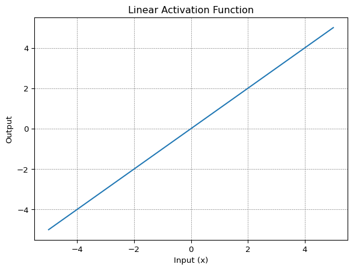
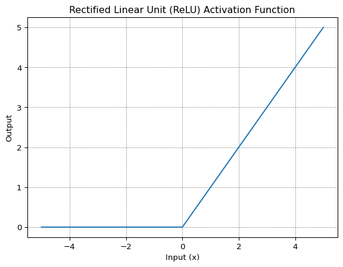
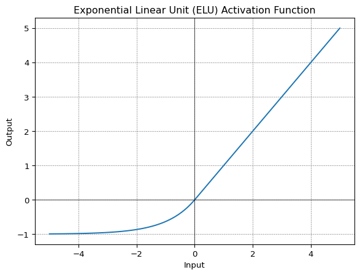

def binary_step_function(x):
return np.where(x < 0, 0, 1)Introduction
A neural network has three types of layers : input layer that take raw input , hidden layer that take input from another layer and pass output to another layer, and finally output layer that make a prediction.
Input layer has no computation performed so there is no activation function required. All hidden layers typically use the same activation function. The output layer will typically use different activation function from the hidden layer depending on the type of prediction required by the model.
An activation function should also be differentiable which means their first order derivative can be calculated for a given input value. This is required since neural network are trained using backpropagation algorithm which requires derivative of loss function in order to updates the weight of model.
Need of Activation Functions in Neural Networks
The objective of activation function in neural network is to add non-linearity so that it can learn complex patterns. Activation function introduces an additional step at each layer during the forward propagation, but its computation is worth. Here it is why-
Let’s suppose we have a neural network without activation functions. In that case every neuron will be performing linear transformation on the inputs using the weights and biases. It’s because it doesn’t matter how many hidden layers we attach in the neural network; all layers will behave in the same way because the composition of two linear functions is a linear function itself.
Although the neural network becomes simpler, hence learning any complex task is impossible, and our model would be just a linear regression model.
Types of Activation Functions
Most of activation functions are non-linear however we also use linear activation functions in neural networks. For example, we use linear activation function in the output layer of neural network model that solves a regression problem.
Linear vs Non Linear Functions
A linear function (called f) takes the input, z and returns the output, cz which is the multiplication of the input by the constant, c. Mathematically, this can be expressed as f(z) = cz. When c=1, the function returns the input as it is and no change is made to the input. The graph of a linear function is a single straight line.
Any function that is not linear can be classified as a non-linear function. The graph of a non-linear function is not a single straight line. It can be a complex pattern or a combination of two or more linear components.
Below are the most common activation function used in hidden layers :
- Binary Step Function
- Linear Activation Function
- Non - Linear Activation Functions
- Sigmoid
- Tanh
- ReLU
- Leaky ReLU
- Parametric ReLU
- ELU
- GELU
- Swish
- SELU
- Softmax
Binary Step Function
In binary step function a threshold value decides that a neuron should be activated or not. Here the input fed to activation function is compared with threshold and if its greater than threshold neuron is activated otherwise it is deactivated which means output is not passed to the next hidden layer.
Mathematically a binary step function can be represented as
\[ f(x) = \begin{cases} 0 & for \ x\lt 0 \\ 1 & for \ x\geq 0 \end{cases} \]
code for binary step function
plot for binary step function
import numpy as np
import matplotlib.pyplot as plt
# Generate a range of values for x
x_values = np.linspace(-5, 5, 1000)
# Apply the binary step function to each value of x
y_values = binary_step_function(x_values)
# Plot the binary step function
plt.plot(x_values, y_values, label='Binary Step Function')
plt.title('Binary Step Function')
plt.xlabel('Input (x)')
plt.ylabel('Output')
plt.grid(color = 'gray', linestyle = '--', linewidth = 0.5)
plt.show()
Warning
The gradient of step function is zero which causes hindrance in the backpropagation process as well as it can’t be use for multi-class classification problems,
Linear Activation Function
This is also known as identity or no activation function where the activation is proportional to input.
Mathematically it can be represented as:
\[ f(x)= x \]
code for linear activation function
def linear_activation(x):
return xplot for linear activation function
import numpy as np
import matplotlib.pyplot as plt
x_values = np.linspace(-5, 5, 10)
y_values = linear_activation(x_values)
# Plot the linear activation function
plt.plot(x_values, y_values, label='Linear Activation Function')
plt.title('Linear Activation Function')
plt.xlabel('Input (x)')
plt.ylabel('Output')
plt.grid(color='gray', linestyle='--', linewidth=0.5)
plt.show()
Warning
Backpropagation can’t be used with linear activation function as the derivative of function is constant and has no relation to the input x. All layers of the neural network will collapse into one if a linear activation function is used.
Non-Linear Activation Functions
Sigmoid
Sigmoid activation function is also called the logistic function. It is a non-linear function which converts its input into a probability value between 0 and 1. Large negative values are converted towards 0 while large positive values are converted towards 1.
Mathematically it can be represented as:
\[ f(x) = \frac{1}{1+e^{-x}} \]
code for sigmoid activation function
import numpy as np
def sigmoid(x):
return 1/(1+ np.exp(-x))plot for sigmoid activation function
import numpy as np
import matplotlib.pyplot as plt
x = np.linspace(-10, 10, 100)
z = sigmoid(x)
plt.plot(x, z)
plt.title('Sigmoid Function')
plt.xlabel('Input (x)')
plt.ylabel("Output")
plt.grid(color = 'gray', linestyle = '--', linewidth = 0.5)
plt.show() Sigmoid is right choice where we have to predict the probability as an output. The function is differentiable and provide smooth gradient which mean no jumps in output values
Warning
Sigmoid function suffers from vanishing gradient problem which makes learning difficult.
Tanh
Tanh or hyperbolic tangent is very similar to sigmoid activation function and even has same S-shape with difference in output range of -1 to 1. In Tanh larger the input (more positive) , the closer the output will be to 1.0 , whereas the smaller the input (more negative) , the closer the output will be to -1.0.
Mathematically it can be represented as:
\[ f(x) = \frac{e^x-e^{-x}}{e^x+e^{-x}} \]
can also be written as :
\[ f(x) = \frac{e^{2x}-1}{e^{2x}+1} \]
code for Tanh activation function
import numpy
def tanh(x):
return (np.exp(2*x) - 1) / (np.exp(2*x) + 1)plot for Tanh activation function
import matplotlib.pyplot as plt
x_values = np.linspace(-5, 5, 1000)
y_values = tanh(x_values)
# Plot the tanh activation function
plt.plot(x_values, y_values, label='tanh Activation Function')
plt.title('tanh Activation Function')
plt.xlabel('Input (x)')
plt.ylabel('Output')
plt.grid(color='gray', linestyle='--', linewidth=0.5)
plt.show()
Warning
It also faces the vanishing gradient issue similar to sigmoid activation function.
ReLU
ReLU stands for rectified linear unit. ReLU gives an impression of linear activation function but it has derivative function and allows for backpropagation while simultaneously making it computationally efficient. ReLU function doesn’t activate all the neuron at same time. The neuron will be deactivated only when the output of the linear transformation is less than 0.
ReLU is a simple and robust choice.
Mathematically it can be represented as:
\[ f(x) = max(0,x) \]
code for ReLU activation function
import numpy as np
def relu(x):
return np.maximum(0, x)plot for ReLU activation function
import numpy as np
import matplotlib.pyplot as plt
x_values = np.linspace(-5, 5, 1000)
y_values = relu(x_values)
# Plot the ReLU activation function
plt.plot(x_values, y_values, label='ReLU Activation Function')
plt.title('Rectified Linear Unit (ReLU) Activation Function')
plt.xlabel('Input (x)')
plt.ylabel('Output')
plt.grid(color='gray', linestyle='--', linewidth=0.5)
plt.show()
ReLU accelerates the convergence of gradient descent towards the global minimum of the loss function due to its linear, non-saturating property.
Note
The ReLU is not differentiable at a singular point x = 0, but we can still use what are known as sub-derivatives in backpropagation algorithm. The usual derivative of a ReLU is actually a sub-derivative to be precise. We use what is called sub-gradient descent approach to optimize such functions.
Dying ReLU Problem
The derivative of ReLU activation is given as :
\[ f'(x) = \begin{cases} 1 & for \ x\geq 0 \\ 0 & for \ x\lt 0 \end{cases} \]
Here the negative values makes the gradient value zero. Due to this reason, during the backpropagation process, the weights and biases for some neurons are not updated. This can create dead neurons which never get activated.
Leaky ReLU
Leaky ReLU is improved version of ReLU function to solve the Dying ReLU problem as it has a small positive slope in the negative area.
Mathematically it can be represented as:
\[ f(x) = max(0.01x, x) \]
code for Leaky ReLU activation function
import numpy as np
def leaky_relu(x):
return np.maximum(0.01*x, x)plot for Leaky ReLU activation function
import numpy as np
import matplotlib.pyplot as plt
x_values = np.linspace(-5, 5, 1000)
y_values = leaky_relu(x_values)
# Plot the ReLU activation function
plt.plot(x_values, y_values, label='Leaky ReLU Activation Function')
plt.title('Leaky Rectified Linear Unit (Leaky ReLU) Activation Function')
plt.xlabel('Input (x)')
plt.ylabel('Output')
plt.grid(color='gray', linestyle='--', linewidth=0.5)
plt.show()The advantages of Leaky ReLU are same as of ReLU, in addition to the fact that it does enable backpropagation, even for negative input values. However it suffers from inconsistent predictions for negative input values.
Parametric ReLU
Parametric ReLU or PReLU is another variant of ReLU that aims to solve the problem of dying ReLU and Leaky ReLU (inconsistent predictions for negative input values). So the authors of the paper behind PReLU thought why not let the a in ax for x<0 (in LeakyReLU) get learned.
And here is the catch: if all the channels share the same a that gets learned, it is called channel-shared PReLU. But if each channel learn their own a, it is called channel-wise PReLU.
So what if ReLU or LeakyReLU was better for that problem? That is upto the model to learn:
if a is/are learned as 0 -> PReLU becomes ReLu
if a is/are learned as small number -> PReLU becomes LeakyReLU
Mathematically it can be represented as:
\[ f(x) = max(ax, x) \]Where “a” is the slope parameter for negative values.
code for Parametric ReLU activation function
import numpy as np
class PReLU:
def __init__(self, alpha=0.01):
self.alpha = alpha
def __call__(self, x):
return np.maximum(self.alpha * x, x)plot for Parametric ReLU activation function
x_values = np.linspace(-5, 5, 100)
# Create a PReLU instance with an initial slope (alpha)
prelu = PReLU(alpha=0.1)
# Calculate corresponding output values using PReLU
prelu_values = prelu(x_values)
# Plot the PReLU function
plt.plot(x_values, prelu_values, label='PReLU Function (alpha=0.1)')
plt.title('Parametric ReLU (PReLU) Activation Function')
plt.xlabel('Input')
plt.ylabel('Output')
plt.axhline(0, color='black', linewidth=0.5)
plt.axvline(0, color='black', linewidth=0.5)
plt.grid(color='gray', linestyle='--', linewidth=0.5)
plt.show()In leaky ReLU alpha is hyper parameter where as in Parametric ReLU it is a parameter.
ELU
Exponential Linear Unit, or ELU for short, is also a variant of ReLU that modifies the slope of the negative part of the function. ELU uses a log curve to define the negative values unlike the leaky ReLU and Parametric ReLU functions with a straight line.
Mathematically it can be represented as:
\[ f(x) = \begin{cases} x & for \ x\geq 0 \\ \alpha(e^x-1) & for \ x\lt 0 \end{cases} \]
code for ELU activation function
import numpy as np
def elu(x, alpha=1.0):
return np.where(x >= 0, x, alpha * (np.exp(x) - 1))plot for ELU activation function
import numpy as np
import matplotlib.pyplot as plt
x_values = np.linspace(-5, 5, 100)
elu_values = elu(x_values)
# Plot the ELU function
plt.plot(x_values, elu_values, label='ELU Function (alpha=1.0)')
plt.title('Exponential Linear Unit (ELU) Activation Function')
plt.xlabel('Input')
plt.ylabel('Output')
plt.axhline(0, color='black', linewidth=0.5)
plt.axvline(0, color='black', linewidth=0.5)
plt.grid(color='gray', linestyle='--', linewidth=0.5)
plt.show()
ELU becomes smooth slowly until its output equal to -α whereas ReLU sharply smoothes. It also avoids dead ReLU problem by introducing log curve for negative values of input.
However the computational time increases because of the exponential operation.
GELU
Gaussian Error Linear Unit or GELU activation function is compatible with BERT, ROBERTa, ALBERT, and other top NLP models. This activation function is motivated by combining properties from dropout, zoneout, and ReLUs.
Mathematically it can be represented as:
\[ f(x) = x\Phi(x) \]
\[ f(x) = 0.5x \left(1 + \tanh\left(\sqrt{\frac{2}{\pi}} \left(x + 0.044715x^3\right)\right)\right) \]
where \(\Phi(x)\) is the cumulative distribution function of Gaussian distribution.
code for GELU activation function
import numpy as np
def gelu(x):
return 0.5 * x * (1 + np.tanh(np.sqrt(2 / np.pi) * (x + 0.044715 * x**3)))plot for GELU activation function
import numpy as np
import matplotlib.pyplot as plt
x_values = np.linspace(-5, 5, 100)
gelu_values = gelu(x_values)
# Plot the GELU function
plt.plot(x_values, gelu_values, label='GELU Function')
plt.title('Gaussian Error Linear Unit (GELU) Activation Function')
plt.xlabel('Input')
plt.ylabel('Output')
plt.axhline(0, color='black', linewidth=0.5)
plt.axvline(0, color='black', linewidth=0.5)
plt.grid(color='gray', linestyle='--', linewidth=0.5)
plt.show()GELU non linearity is better than ReLU and ELU activations and finds performance improvements across all tasks in domains of computer vision, natural language processing, and speech recognition.
Swish
In 2018 the paper Searching for activation functions by researchers at Google Brain team proposes a novel activation function called Swish, which was discovered using a Neural Architecture Search (NAS) approach and showed significant improvement in performance compared to standard activation functions like ReLU or Leaky ReLU.
Swish consistently matches or outperforms ReLU activation function on deep networks applied to various challenging domains such as image classification machine translation etc.
Mathematically it can be represented as:
\[ f(x) = \frac{x}{1 + e^{-\beta x}} \]
where \(\beta\) is either a constant or trainable parameter depending on the model.
it can also written in terms of sigmoid activation function
\[ f(x) = x*sigmoid(\beta x) \]
at \(\beta=1\) the function becomes equivalent to sigmoid linear unit or SiLU.
\[ f(x) = \frac{x}{1+ e^{-x}} \]
code for Swish activation function
import numpy as np
def swish(x,beta = 1.0):
return x*(1/(1+np.exp(-beta*x)))plot for Swish activation function
import numpy as np
import matplotlib.pyplot as plt
x_values = np.linspace(-5, 5, 100)
swish_values = swish(x_values)
# Plot the Swish function
plt.plot(x_values, swish_values, label='Swish Function (beta=1.0)')
plt.title('Swish Activation Function')
plt.xlabel('Input')
plt.ylabel('Output')
plt.axhline(0, color='black', linewidth=0.5)
plt.axvline(0, color='black', linewidth=0.5)
plt.grid(color='gray', linestyle='--', linewidth=0.5)
plt.show()SELU
Scaled Exponential Linear Unit or SELU was defined in self-normalizing networks and takes care of internal normalization which means each layer preserves the mean and variance from the previous layers. SELU enables this normalization by adjusting the mean and variance.
Mathematically it can be represented as:
\[ \begin{equation} f(\alpha, x) = \lambda \begin{cases} \alpha(e^x - 1), & \text{if}\ x \lt 0 \\ x, & \text{otherwise} \\ \end{cases} \end{equation} \]
SELU has values of α and λ predefined.
code for SELU activation function
import numpy as np
def selu(x, alpha=1.67326, lambda_=1.0507):
return lambda_ * np.where(x > 0, x, alpha * (np.exp(x) - 1))plot for SELU activation function
import numpy as np
import matplotlib.pyplot as plt
x_values = np.linspace(-5, 5, 100)
selu_values = selu(x_values)
# Plot the SELU function
plt.plot(x_values, selu_values, label='SELU Function (alpha=1.67326, lambda=1.0507)')
plt.title('Scaled Exponential Linear Unit (SELU) Activation Function')
plt.xlabel('Input')
plt.ylabel('Output')
plt.axhline(0, color='black', linewidth=0.5)
plt.axvline(0, color='black', linewidth=0.5)
plt.grid(color='gray', linestyle='--', linewidth=0.5)
plt.show()
The main advantage of SELU over ReLU is internal normalization is faster than external normalization, which means the network converges faster.
SELU is a relatively newer activation function and needs more papers on architectures such as CNNs and RNNs, where it is comparatively explored.
Softmax
Softmax is generalization of sigmoid activation function which can be used for multi-class classification. The softmax function squashes the outputs of each unit to be between 0 and 1, just like a sigmoid function. But it also divides each output such that the total sum of the outputs is equal to 1.
Assume that you have three classes, meaning that there would be three neurons in the output layer. Now, suppose that your output from the neurons is [1.8, 0.9, 0.68]. Applying the softmax function over these values to give a probabilistic view will result in the following outcome: [0.58, 0.23, 0.19].
\[ f(z_i) = \frac{e^{z_{i}}}{\sum_{j=1}^K e^{z_{j}}} \ \ \ for\ i=1,2,\dots,K \]
code for Softmax activation function
import numpy as np
def softmax(z):
exp_z = np.exp(z)
return exp_z / np.sum(exp_z)Choosing the right activation function
Below are some rule of thumb for choosing the right activation function :
Activation function in output layer depends on type of prediction problem.
- Binary Classification - Sigmoid
- Multi-class Classification - Softmax
- Regression - Linear
- Multilabel Classification—Sigmoid
Activation function in hidden layer
- Start with using ReLU function and then move over to other activation functions if ReLU doesn’t provide optimum results.
- Don’t use sigmoid and Tanh activation functions in hidden layer as they can cause vanishing gradient problem.
- Swish function is used in neural networks having a depth greater than 40 layers.